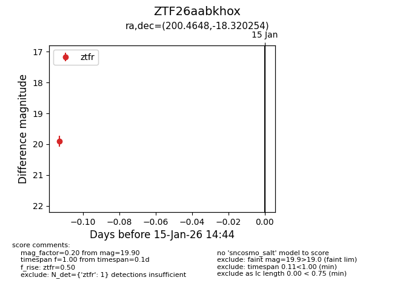
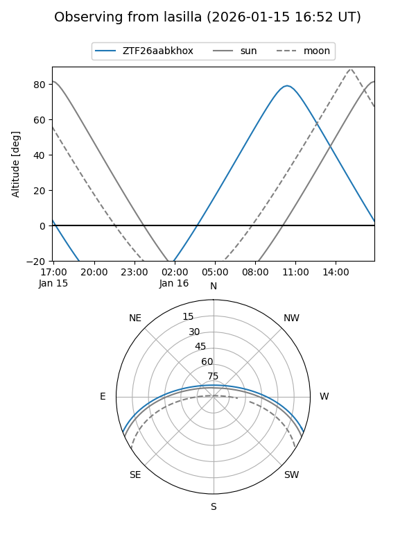
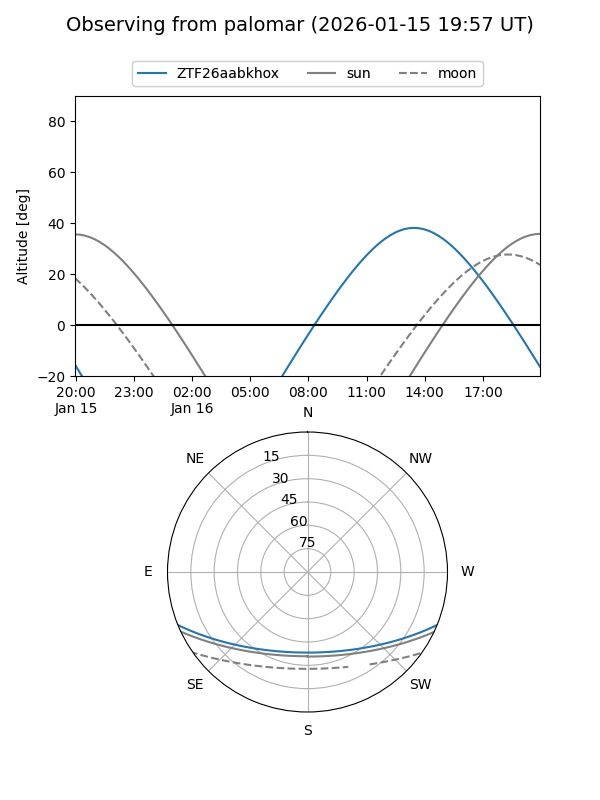
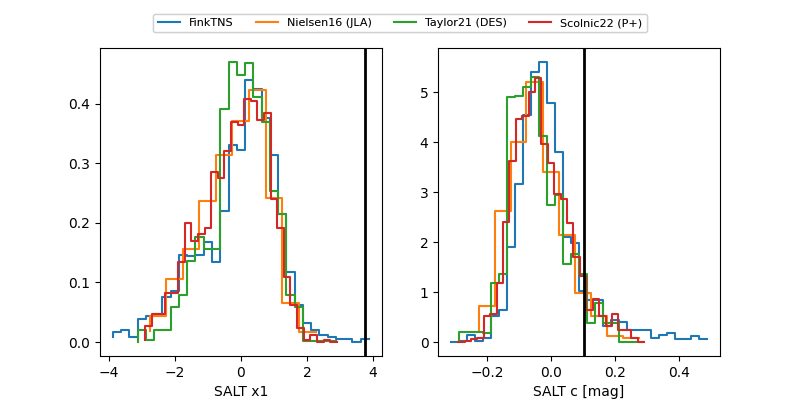

ZTF26aabkhox
Target ZTF26aabkhox at 2026-01-17 14:50
Aliases and brokers:
FINK: link
Lasair: link
ALeRCE: link
alt names
ZTF26aabkhox (ztf,fink_ztf)
Coordinates:
equatorial (ra, dec) = 200.4648,-18.32025
equatorial (HMS+DMS) = 13:21:51.55,-18:19:12.92
galactic (l, b) = (312.9835,+43.95696)
Flags:
Photometry:
last ztfr=19.90
1 ztfr detections
Lightcurve

Visibility


Additional plots
